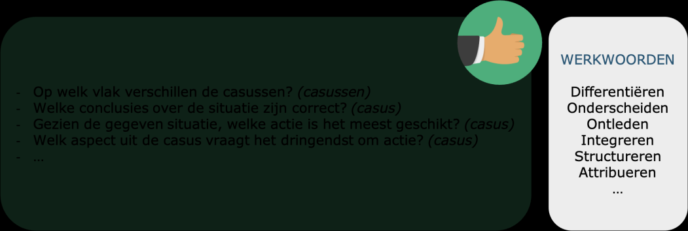
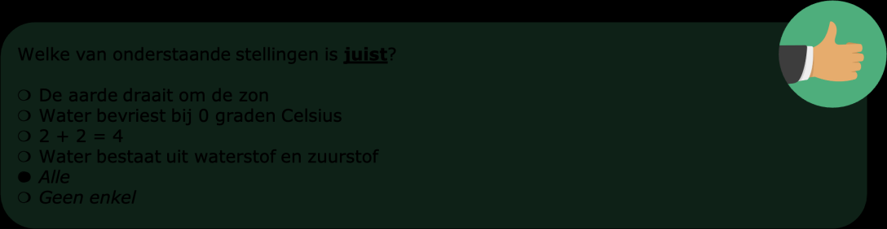
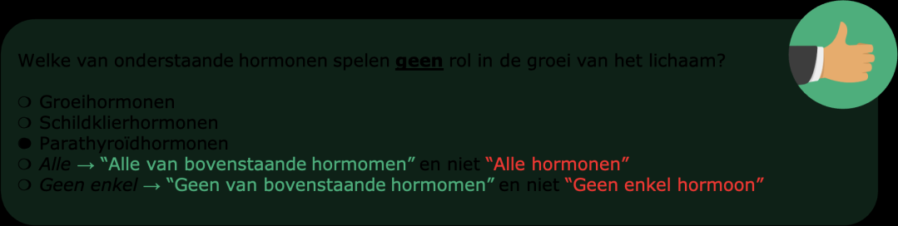
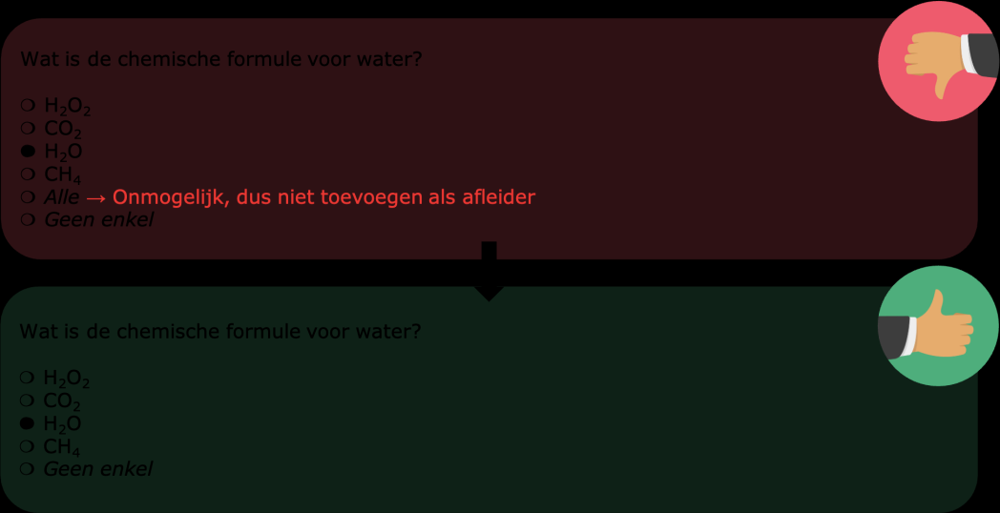

Hogere beheersingsniveaus (bv. analyseren)
Voornamelijk de eerste drie niveaus van de taxonomie van Bloom (onthouden, begrijpen, toepassen) kunnen goed afgedekt worden met meerkeuzevragen. De hogere niveaus (bv. analyseren) kunnen echter ook in gesloten vraagvorm gevat worden. Dit kan enerzijds via grote deskundigheid van de vraagsteller, maar anderzijds ook via het gebruik van AIA.
Je kan leerlingen niet vragen een redenering uit te schrijven, maar je kan hen wel een aantal redeneringen voorleggen en vragen de juiste te kiezen. Zorg ervoor dat je een vraag formuleert, waarbij het antwoord werkelijk een analyse vraagt van de leerling. Zo vraag je leerlingen om meerdere aspecten in rekening te brengen door bijvoorbeeld: een casus te geven, een specifieke situatie te beschrijven, een vergelijking voor te leggen, …

Daarnaast kan je, mits van toepassing bij de vraag, AIA toevoegen als antwoordmogelijkheden. In principe is er bij meerkeuzevragen altijd slechts één juist antwoord. Door AIA toe te voegen, kan je richting een vraag gaan waar meerdere antwoordmogelijkheden mogelijk zijn. Dit vereist een hoger denkniveau van leerlingen.
Er zijn meerdere typen AIA ('Alle', 'Geen enkel', 'Ontbreking' en 'Absurditeit'), maar vooral 'Alle' en 'Geen enkel' worden gebruikt. Wij bevelen onderstaande formuleringen en vaste startposities aan:
- Alle (voorlaatste positie)
- Geen enkel (laatste positie)

Let op! De AIA 'Alle' en 'Geen enkel' hebben betrekking op de antwoordmogelijkheden en niet op de vraag.
- Alle
- Positieve vraagstelling: "Alle voorgestelde antwoordmogelijkheden zijn tegelijkertijd juist"
- Negatieve vraagstelling: "Alle voorgestelde antwoordmogelijkheden zijn tegelijkertijd fout"
- Geen enkel
- Positieve vraagstelling: "Geen van de voorgestelde antwoordmogelijkheden is juist"
- Negatieve vraagstelling: "Geen van de voorgestelde antwoordmogelijkheden is fout"

Let op! In functie van de vraag is soms slechts één van beide AIA mogelijk. Voeg AIA enkel toe wanneer deze antwoordmogelijkheden ook geloofwaardig zijn.

Let op! Laat de AIA bij een representatief aantal vragen als juiste antwoord gelden. Doe je dit niet, dan gaan leerlingen op termijn door hebben dat ze deze antwoordmogelijkheden nooit moeten kiezen.
Opmerking: Mogelijks heb je vanuit literatuur het advies gekregen om AIA te vermijden bij het opstellen van meerkeuzevragen, gezien het gebruik van AIA ingaat tegen het principe van meerkeuzevragen waarbij er maar één juist antwoord is. Echter raden we in deze opleidingsmodule het gebruik van AIA wel aan, aangezien dit, zeker in combinatie met correctie volgens zekerheidsgraden, een hoger denkniveau bij leerlingen kan stimuleren.